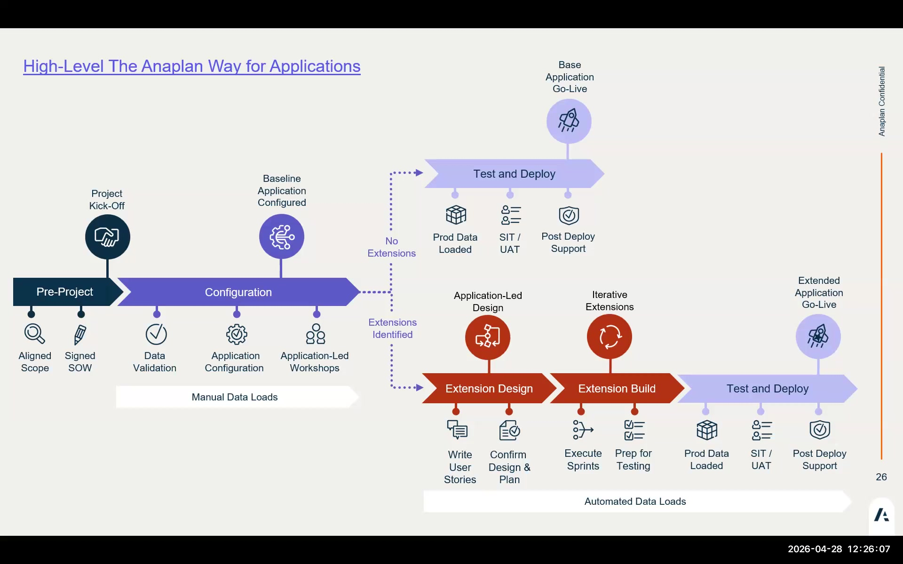
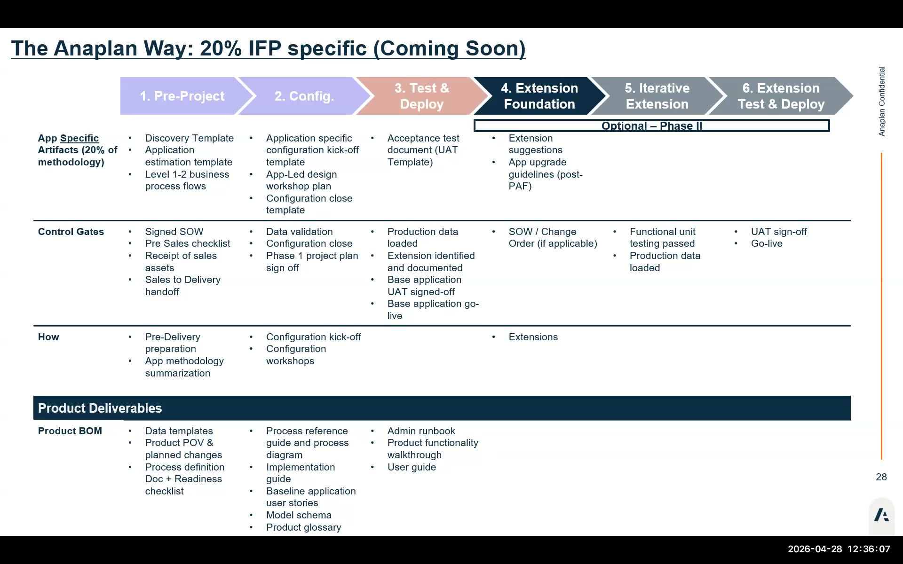

Anaplan Way for Applications
The six-phase delivery methodology and what happens in each phase
The Six-Phase IFP Delivery Methodology
IFP delivery follows Anaplan's standard App delivery phases, adapted for the configurator-generation workflow. Understanding the phases helps you set correct expectations with customers and know which activities belong where.
Pre-Project
The engagement prep phase. Deliverables include:
- Session Zero — configuration discovery with the customer
- Configuration worksheet completed (all 43 questions answered)
- Hierarchy decisions locked: entity levels, geography structure, functional areas
- Data availability confirmed: actuals source, headcount feed, currency setup
- Workspace provisioned, workspace admin access confirmed for the delivery team
Config
The configurator phase. The delivery consultant:
- Enters all configuration answers in the App Framework configurator
- Reviews top-level questions and financial planning configurations
- Triggers model generation
- Reviews error logs and resolves formula errors
Test & Deploy
Validation phase after a clean generation:
- Load sample actuals data via ADO pipelines
- Spot-check calculated line items in CALC modules
- Validate planning methods in UX pages
- UAT with key users from the customer team
Extension Foundation
Design and scope customer-specific extensions:
- Identify gaps between IFP base model and customer requirements
- Classify each gap: Configure vs. Extend vs. Modify
- Size each extension (S/M/L/XL)
- Create extension tags in the model (Extension + Formula Override)
Iterative Extension
Build extensions in priority order:
- Each extension: design → build → test → document
- Tag every line item you add or modify
- Document in external design spec (not just in-model notes)
- Regression test base model functionality after each extension
Extension Test & Deploy
Final validation and handover:
- Full UAT with all extensions in place
- Performance test with production data volumes
- Handover documentation: extension log, formula override map, upgrade checklist
- Training for customer admins


Session Zero is critical. Unlike custom model builds, IFP configuration decisions made at Session Zero are difficult or impossible to change after generation. Hierarchy levels, geography structure, and entity configuration must be locked before anyone touches the configurator. A missed dimension at Session Zero = a complete regeneration during Test & Deploy.
Two Customer Types
🌱 Greenfield
- New workspace, no existing Anaplan models
- IFP is the first application
- No integration complexity with existing models
- Full ADO setup from scratch
- Risk: Session Zero discovery is the only constraint — get it right
🔗 Existing Workspace
- IFP deployed alongside existing live models
- Workspace admin must manage list conflicts
- ADO may need to coexist with existing import actions
- List naming must not collide with existing lists
- Risk: Generation may affect existing workspace settings
Map FintechCo to the Right Phase
Based on the FintechCo case study: which phase are we in today? What should have been completed before this session? What's the next phase after we complete the lab configuration? Discuss with your neighbor.